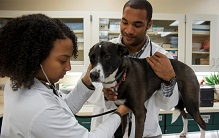

All Pets Veterinary Hospital has been a leader in specialty veterinary care since 1990, fulfilling the need for specialty healthcare and emergency services for animals in San Diego County and Southern California.
No matter how little money and how few possessions you own, having a dog makes you rich.
-- Louis Sabin
All Pets Veterinary Specialty Hospital is proud to provide the highest quality of specialty care to pets, and the best customer service to owners in the San Diego community. We have state-of-the-art facilities, with some of the most advanced equipment for pets found anywhere in the country. Simply put, we are committed to being leaders in providing the best specialty care for your pets.

Our hospital utilizes the latest equipment, including MRI, CAT scan, radiation therapy, digital radiography, a state-of-the-art intensive care unit, ultra-modern surgical suites, endoscopy, ultrasound, and much more to provide comprehensive specialty care for pets of all ages. Furthermore, our staff of doctors, technicians and client service representatives has exceptional training, motivation, and compassion for the pets we treat.
In summary, as part of our mission to offer high-quality specialty care for pets in the San Diego area, our hospitals boast a level of sophistication that can only be found in the most advanced human medical facilities. We strive for exceptional client service and compassionate care for patients. Since most of us have pets of our own, we understand the strong bond that our clients have with their pets, and realize that they are part of the family.